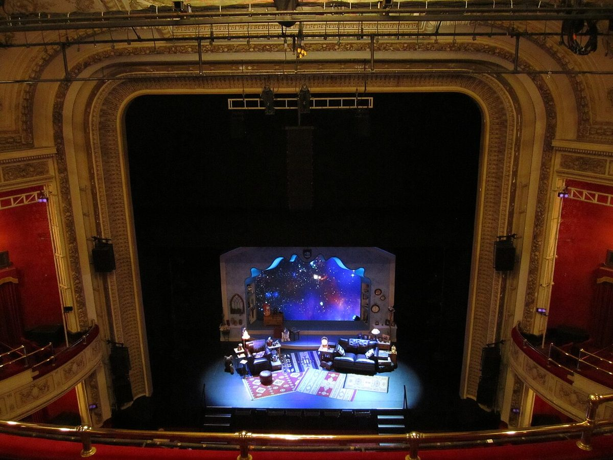
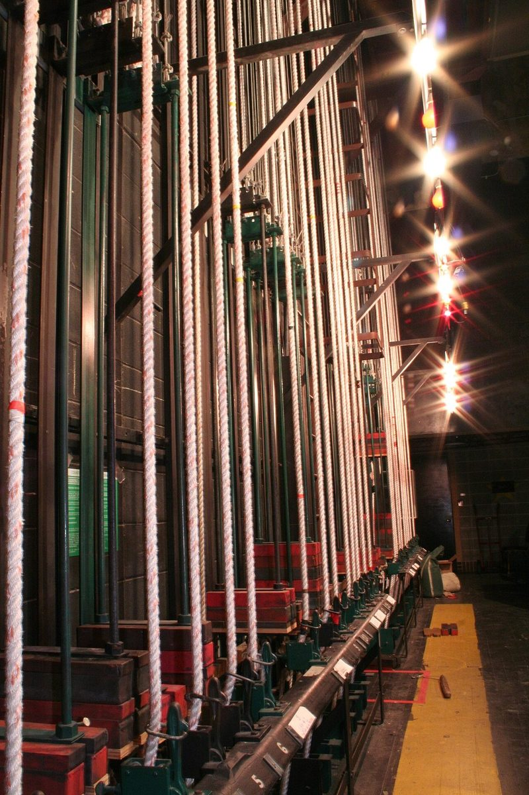
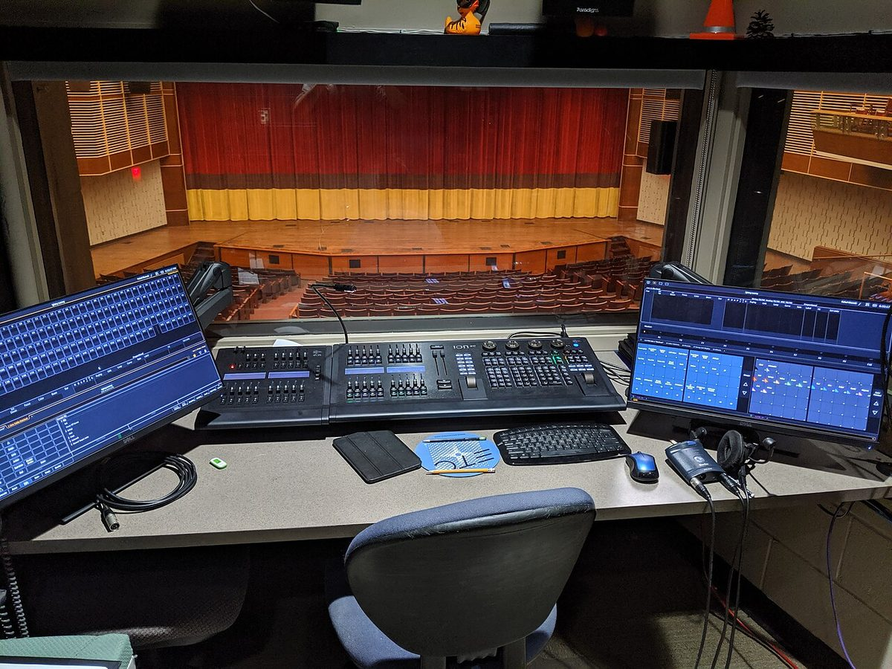
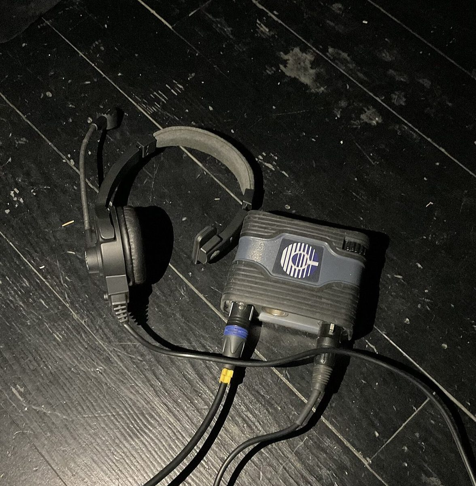

Ground Plans, Sightlines & Prompt Books
Translate the script into a scaled overhead stage plot with clear entrances and spike marks, then build the master cue sheet that runs the show.
Every theatrical or musical performance is built twice: first on paper during pre-production (script breakdowns, scaled ground plans, lighting plots, RF frequency tables, and prompt-book cue sheets) and then in real time during production week (gain staging, monitor mixing, scene recall, cue-to-cue rehearsal, and calling Standby and GO from the booth). Use this curriculum hub to plan a show from first read-through to final curtain.
In a school or professional musical, seven technical departments—Scenic/Deck, Props, Costumes/Quick-Change, Lighting, Projection/Video, Audio/RF, and Stage Management—must converge on the same beat of the score. Follow these five phases in order.
Before anyone hangs a light or tapes a stage floor, the Stage Manager and technical heads do a Pre-Production Script Breakdown. Select a musical production moment below to see how a single passage in the libretto generates coordinated tasks across every department.
Work through the five units below to master both pre-production planning and live production execution. Each lesson includes an interactive simulator, real-world hardware reference, and a practice check.
Translate the script into a scaled overhead stage plot with clear entrances and spike marks, then build the master cue sheet that runs the show.
Sculpt performers in 3D space using McCandless key/fill angles and color temperature, then calculate projector lens throw and actor shadow clearance.
Understand how sound waves resonate in a room, aim directional microphones to maximize gain before feedback, and wire a clean stage-to-FOH signal chain.
Carve pit-orchestra masking out of vocals, tame belted high notes with compression, route aux monitors, mix on the Allen & Heath Qu-7, and coordinate bodypack RF.
Performers and technicians also work for the lens—whether designing monitor-framed puppetry like Jim Henson, shooting archival video of a school musical, or feeding a live lobby/IMAG relay.
Check off each pre-production and tech-week milestone as your crew prepares a show. Progress saves automatically in this browser.
Click any photograph to enlarge it for class discussion. Notice how the physical architecture of the stagehouse, counterweight fly rail, lighting console, and intercom loop all connect to the Stage Manager's prompt book.

The proscenium arch frames the audience's sightlines while masking the overhead lighting electrics, fly loft, and offstage wing space where scenery and actors wait.
Photo: Crispiness / Wikimedia Commons (CC BY 2.0)
Each rope lock controls a counterweighted batten overhead carrying curtains, legs, borders, or painted drops like the rocky seashore in The Pirates of Penzance.
Photo: Stageguy1 / Wikimedia Commons (CC BY-SA 3.0)
During tech week, every lighting look is recorded as a numbered cue with an exact fade time so the operator can execute complex transitions with a single press of the GO button.
Photo: Isiwal / Wikimedia Commons (CC BY-SA 4.0)
A single-muff headset lets crew hear the live room and orchestra with one ear while receiving the Stage Manager's quiet Warning, Standby, and GO calls in the other.
Photo: Benutzer:Bautsch / Wikimedia Commons (CC0 1.0)